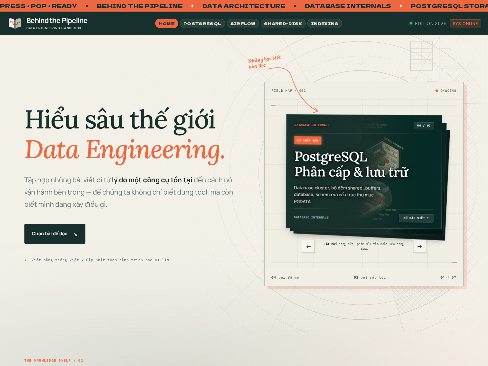

BEHIND THE PIPELINE / KHUNG GÓC VUÔNG
Cùng ngôn ngữ thiết kế với homepage.
Giữ tỷ lệ chồng card hiện tại. Khung, card và nút đều có góc vuông; chọn từng phương án để xem trong bố cục trang chủ.
Giấy kem, lưới kỹ thuật rất nhạt, viền mảnh và tấm cam lệch phía sau. Gần nhất với nền giấy, chữ serif và điểm nhấn cam của homepage.
